Norsemen Techtree of Glest - Version 0.8.1 beta (Megapack)
Home
Choose faction: Egypt | Indian | Magic | Norsemen | Persian | Romans | Tech
Techtree Diagrams: Buildings | Buildings Units | All
Overview for Faction: Norsemen
Combat Units
| Name | Total Cost | Hit Points | Rege- nerate | Armor Strength | Armor Type | Sight Range | Move Speed | Air / Ground | Attack Strength Land | Attack Strength Air | Attack Range |
|---|---|---|---|---|---|---|---|---|---|---|---|
| | 700 | 1 | 20 | Leather | 15 | 220 | Ground | 85 +- 50 | 85 +- 50 | 10 | |
| 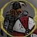Axe Thrower | 700 | 1 | 20 | Leather | 12 | 250 | Ground | 130 +- 40 | -- | 7 | |
| | 700 | 1 | 40 | Leather | 12 | 220 | Ground | 160 +- 40 | -- | 1 | |
| | 700 | 1 | 50 | Leather | 12 | 330 | Ground | 160 +- 40 | -- | 1 | |
| | 1200 | 3 | 15 | Wood | 15 | 150 | Ground | 250 +- 90 | -- | 10 | |
| Cudgel Lady | 750 | 1 | 1 | Leather | 8 | 150 | Ground | 80 +- 40 | -- | 1 | |
| | 1650 | 3 | 30 | Organic | 10 | 480 | Air | 270 +- 50 | 270 +- 50 | 6 | |
| | 5000 | - | - | Wood | 19 | -- | Ground | -- | 150 +- 50 | 15 | |
| | 700 | 1 | 7 | Leather | 10 | 250 | Ground | 50 +- 20 | -- | 1 | |
| | 700 | 1 | 20 | Leather | 10 | 220 | Ground | 55 +- 40 | -- | 1 | |
| 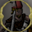Swordman | 500 | 1 | 20 | Leather | 10 | 220 | Ground | 100 +- 30 | -- | 1 | |
| | 600 | 1 | 35 | Leather | 10 | 220 | Ground | 110 +- 40 | -- | 1 | |
| 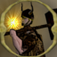Thor | 2000 | 3 | 45 | Stone | 10 | 125 | Ground | 350 +- 50 | 170 +- 40 | 8 | |
| 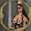Valkyrie | 800 | 2 | 80 | Leather | 10 | 220 | Ground | 300 +- 100 | 170 +- 50 | 7 | |
| | 700 | 2 | 3 | Organic | 12 | 300 | Ground | 75 +- 40 | -- | 1 |
Worker Units
| Name | Total Cost | Hit Points | Rege- nerate | Armor Strength | Armor Type | Sight Range | Move Speed | Air / Ground |
|---|---|---|---|---|---|---|---|---|
| | 500 | 2 | - | Organic | 10 | 150 | Ground | |
| | 600 | 1 | - | Leather | 9 | 190 | Ground |
Buildings
| Name | Total Cost | Hit Points | Rege- nerate | Armor Strength | Armor Type | Sight Range | Storage |
|---|---|---|---|---|---|---|---|
| | 6000 | - | - | Wood | 12 | ||
| | 1000 | - | - | Wood | 5 | ||
| | 9000 | - | - | Stone | 15 | ||
| 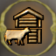Farm | 3000 | - | - | Wood | 5 | ||
| 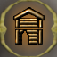House | 3000 | - | - | Wood | 5 | ||
| | 6000 | - | - | Stone | 6 | ||
| | 5000 | - | - | Wood | 19 | ||
| | 3000 | - | 20 | Wood | 16 | ||
| | 6000 | - | - | Wood | 5 |
Upgrades
| Name | Cost | Increases | Affects | Enables to build |
|---|---|---|---|---|
| 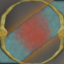Advanced Iron | Attack Strength: +25, Armor: +5 | Battleaxe, Valkyrie, Battleaxe Berserk, Axe Thrower | ||
| | Attack Strength: +25, Attack Range: ++1, Armor: +10 | Archer | Crossbow | |
| 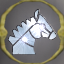Holy Valkyrie | Flying Valkyrie | |||
| | Attack Strength: +15, Armor: +10 | Swordman, Axe Thrower, Battleaxe | Crossbow | |
| | Battleaxe Berserk, Battleaxe, Swordman Berserk | |||
| | Mead Bar | Battleaxe Berserk, Spearman Berserk, Swordman Berserk |
Unit Details for Faction Norsemen
| Advanced Iron | |
| Type: | Upgrade |
| Creation: | Upgraded by Blacksmith |
| Total Cost: | |
| Production Time: | 300 |
| Increase Attack Strength: | +25 |
| Increase Armor: | +5 |
| Affects Units: | Battleaxe, Valkyrie, Battleaxe Berserk, Axe Thrower |
| Needed to build Advanced Iron: | Blacksmith |
 | Archer |
| Type: | Combat Unit |
| Creation: | Produced by Bone Tent |
| Total Cost: | |
| Production Time: | 60 |
| Maximum Hitpoints: | 700 |
| Regeneration of Hitpoints: | 1 |
| Armor-Strength: | 20 |
| Armor-Type: | Leather |
| Sight-Range: | 15 |
| Needed to build Archer: | Farm |
| Movement Type: | Ground Unit |
| Move Command: Move | Speed: 220 |
| Attack Command: Attack |
Target: Ground and air units Strength: 85+-50 Range: 10 Type: Arrow Attack Speed: 60 Start Time: 0.5 This Attack Skill is used on "Hold Position" |
| Level(s): |
Elite at 5 kills Hitpoints: 700 -> 1050 Armor Strength: 20 -> 30 Sight: 15 -> 18 |
| Upgrades Available: | Arrow (Attack Strength: +25,
Attack Range: ++1,
Armor: +10) |
| Arrow | |
| Type: | Upgrade |
| Creation: | Upgraded by Blacksmith |
| Total Cost: | |
| Production Time: | 300 |
| Increase Attack Strength: | +25 |
| Increase Attack Range: | ++1 |
| Increase Armor: | +10 |
| Affects Units: | Archer |
| Arrow is a Upgrade-Requirement for: | Crossbow |
| Needed to build Arrow: | Blacksmith |
| Axe Thrower | |
| Type: | Combat Unit |
| Creation: | Produced by Bone Tent |
| Total Cost: | |
| Production Time: | 50 |
| Maximum Hitpoints: | 700 |
| Regeneration of Hitpoints: | 1 |
| Armor-Strength: | 20 |
| Armor-Type: | Leather |
| Sight-Range: | 12 |
| Needed to build Axe Thrower: | House Mead Bar |
| Movement Type: | Ground Unit |
| Move Command: Move | Speed: 250 |
| Attack Command: Attack |
Target: Only ground units Strength: 130+-40 Range: 7 Type: Magic Attack Speed: 100 Start Time: 0.8 |
| Upgrades Available: | Iron (Attack Strength: +15,
Armor: +10) Advanced Iron (Attack Strength: +25, Armor: +5) |
 | Battleaxe |
| Type: | Combat Unit |
| Creation: | Produced by Bone Tent |
| Total Cost: | |
| Production Time: | 60 |
| Maximum Hitpoints: | 700 |
| Regeneration of Hitpoints: | 1 |
| Armor-Strength: | 40 |
| Armor-Type: | Leather |
| Sight-Range: | 12 |
| Needed to build Battleaxe: | Blacksmith Mead |
| Movement Type: | Ground Unit |
| Move Command: Move | Speed: 220 |
| Morph Skill: Morph | Morphing to: Battleaxe Berserk Refund (Discount): 60 % Morph Speed: 300 |
| Attack Command: Attack |
Target: Only ground units Strength: 160+-40 Range: 1 Type: Sword Attack Speed: 100 Start Time: 0.3 |
| Upgrades Available: | Iron (Attack Strength: +15,
Armor: +10) Advanced Iron (Attack Strength: +25, Armor: +5) |
| Battleaxe Berserk |
| Type: | Combat Unit |
| Creation: | Morphing from Battleaxe |
| Total Cost: | (Cost for Battleaxe Berserk with 60 % discount = + cost for Battleaxe = |
| Production Time: | 50 |
| Maximum Hitpoints: | 700 |
| Regeneration of Hitpoints: | 1 |
| Armor-Strength: | 50 |
| Armor-Type: | Leather |
| Sight-Range: | 12 |
| Needed to build Battleaxe Berserk: | Root Mead |
| Movement Type: | Ground Unit |
| Move Command: Move | Speed: 330 |
| Attack Command: Attack |
Target: Only ground units Strength: 160+-40 Range: 1 Type: Sword Attack Speed: 200 Start Time: 0.3 |
| Upgrades Available: | Advanced Iron (Attack Strength: +25,
Armor: +5) |
 | Blacksmith |
| Type: | Building |
| Creation: | Built by Thrall |
| Total Cost: | |
| Storage: | |
| Production Time: | 100 |
| Maximum Hitpoints: | 6000 |
| Regeneration of Hitpoints: | - |
| Armor-Strength: | - |
| Armor-Type: | Wood |
| Sight-Range: | 12 |
| Blacksmith is able to Produce: | Crossbow |
| Blacksmith is able to Upgrade: | Iron Arrow Advanced Iron |
| Blacksmith is a Requirement for: | Mistletoe Tree Flying Valkyrie Crossbow Thor Valkyrie Battleaxe Valhalla Swordman Berserk |
| Needed to build Blacksmith: | House Bone Tent |
 | Bone Tent |
| Type: | Building |
| Creation: | Built by Thrall |
| Total Cost: | |
| Production Time: | 50 |
| Maximum Hitpoints: | 1000 |
| Regeneration of Hitpoints: | - |
| Armor-Strength: | - |
| Armor-Type: | Wood |
| Sight-Range: | 5 |
| Bone Tent is able to Produce: | Swordman Archer Battleaxe Axe Thrower |
| Bone Tent is a Requirement for: | Spearman Blacksmith |
| Needed to build Bone Tent: | House |
 | Castle |
| Type: | Building |
| Creation: | Built by Thrall |
| Total Cost: | |
| Storage: | |
| Production Time: | 300 |
| Maximum Hitpoints: | 9000 |
| Regeneration of Hitpoints: | - |
| Armor-Strength: | - |
| Armor-Type: | Stone |
| Sight-Range: | 15 |
| Castle is able to Produce: | Thrall |
| Castle is a Requirement for: | House Farm |
 | Cow |
| Type: | Worker Unit |
| Creation: | Produced by Farm |
| Total Cost: | |
| Production Time: | 40 |
| Maximum Hitpoints: | 500 |
| Regeneration of Hitpoints: | 2 |
| Armor-Strength: | - |
| Armor-Type: | Organic |
| Sight-Range: | 10 |
| Movement Type: | Ground Unit |
| Move Command: Move | Speed: 150 |
 | Crossbow |
| Type: | Combat Unit |
| Creation: | Produced by Blacksmith |
| Total Cost: | |
| Production Time: | 100 |
| Maximum Hitpoints: | 1200 |
| Regeneration of Hitpoints: | 3 |
| Armor-Strength: | 15 |
| Armor-Type: | Wood |
| Sight-Range: | 15 |
| Needed to build Crossbow: | Blacksmith Arrow Iron |
| Movement Type: | Ground Unit |
| Move Command: Move | Speed: 150 |
| Attack Command: Attack Arrow |
Target: Only ground units Strength: 250+-90 Range: 10 Splash-Radius: 2 Splash also damages own units! Type: Piercing Attack Speed: 50 Start Time: 0 This Attack Skill is used on "Hold Position" |
| Cudgel Lady | |
| Type: | Combat Unit |
| Creation: | Produced by House Produced by Mead Bar |
| Total Cost when produced by House: | |
| Total Cost when produced by Mead Bar: | |
| Production Time: | 40 |
| Maximum Hitpoints: | 750 |
| Regeneration of Hitpoints: | 1 |
| Armor-Strength: | 1 |
| Armor-Type: | Leather |
| Sight-Range: | 8 |
| Movement Type: | Ground Unit |
| Move Command: Move | Speed: 150 |
| Attack Command: Cudgel |
Target: Only ground units Strength: 80+-40 Range: 1 Type: Beat Attack Speed: 35 Start Time: 0.01 |
| Farm | |
| Type: | Building |
| Creation: | Built by Thrall |
| Total Cost: | |
| Storage: | |
| Production Time: | 50 |
| Maximum Hitpoints: | 3000 |
| Regeneration of Hitpoints: | - |
| Armor-Strength: | - |
| Armor-Type: | Wood |
| Sight-Range: | 5 |
| Farm is able to Produce: | Cow |
| Farm is a Requirement for: | Flying Valkyrie Archer |
| Needed to build Farm: | Castle |
 | Flying Valkyrie |
| Type: | Combat Unit |
| Creation: | Produced by Valhalla |
| Total Cost: | |
| Production Time: | 120 |
| Maximum Hitpoints: | 1650 |
| Regeneration of Hitpoints: | 3 |
| Armor-Strength: | 30 |
| Armor-Type: | Organic |
| Sight-Range: | 10 |
| Needed to build Flying Valkyrie: | Blacksmith Farm Holy Valkyrie |
| Movement Type: | Air Unit |
| Move Command: Move | Speed: 480 |
| Attack Command: Attack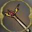 |
Target: Ground and air units Strength: 270+-50 Range: 6 Splash-Radius: 1 Splash also damages own units! Type: Magic Attack Speed: 110 Start Time: 0.5 This Attack Skill is used on "Hold Position" |
| Level(s): |
Elite at 7 kills Hitpoints: 1650 -> 2475 Armor Strength: 30 -> 45 Sight: 10 -> 12 |
| Holy Valkyrie | |
| Type: | Upgrade |
| Creation: | Upgraded by Valhalla |
| Total Cost: | |
| Production Time: | 100 |
| Holy Valkyrie is a Upgrade-Requirement for: | Flying Valkyrie |
| Needed to build Holy Valkyrie: | Valhalla |
| House | |
| Type: | Building |
| Creation: | Built by Thrall |
| Total Cost: | |
| Storage: | |
| Production Time: | 35 |
| Maximum Hitpoints: | 3000 |
| Regeneration of Hitpoints: | - |
| Armor-Strength: | - |
| Armor-Type: | Wood |
| Sight-Range: | 5 |
| House is able to Produce: | Cudgel Lady Spearman |
| House is a Requirement for: | Axe Thrower Mead Bar Bone Tent Blacksmith |
| Needed to build House: | Castle |
 | Iron |
| Type: | Upgrade |
| Creation: | Upgraded by Blacksmith |
| Total Cost: | |
| Production Time: | 300 |
| Increase Attack Strength: | +15 |
| Increase Armor: | +10 |
| Affects Units: | Swordman, Axe Thrower, Battleaxe |
| Iron is a Upgrade-Requirement for: | Crossbow |
| Needed to build Iron: | Blacksmith |
 | Mead |
| Type: | Upgrade |
| Creation: | Upgraded by Mead Bar |
| Total Cost: | |
| Production Time: | 200 |
| Mead is a Upgrade-Requirement for: | Battleaxe Berserk Battleaxe Swordman Berserk |
| Needed to build Mead: | Mead Bar |
 | Mead Bar |
| Type: | Building |
| Creation: | Built by Thrall |
| Total Cost: | |
| Production Time: | 100 |
| Maximum Hitpoints: | 6000 |
| Regeneration of Hitpoints: | - |
| Armor-Strength: | - |
| Armor-Type: | Stone |
| Sight-Range: | 6 |
| Mead Bar is able to Produce: | Cudgel Lady Spearman |
| Mead Bar is able to Upgrade: | Mead |
| Mead Bar is a Requirement for: | Mistletoe Tree Axe Thrower Valhalla Swordman Berserk |
| Needed to build Mead Bar: | House |
| Upgrades Available: | Root |
 | Mistletoe Tree |
| Type: | Building |
| Creation: | Built by Thrall |
| Total Cost: | |
| Storage: | |
| Production Time: | 50 |
| Maximum Hitpoints: | 5000 |
| Regeneration of Hitpoints: | - |
| Armor-Strength: | - |
| Armor-Type: | Wood |
| Sight-Range: | 19 |
| Mistletoe Tree is able to Produce: | Wild Sow |
| Mistletoe Tree is able to Upgrade: | Root |
| Mistletoe Tree is a Requirement for: | Valhalla |
| Needed to build Mistletoe Tree: | Blacksmith Mead Bar |
| Movement Type: | Ground Unit |
| Attack Command: Air On |
Target: Only air units Strength: 150+-50 Range: 15 Splash-Radius: 3 Splash also damages own units! Type: Magic Attack Speed: 80 Start Time: 0.3 |
 | Root |
| Type: | Upgrade |
| Creation: | Upgraded by Mistletoe Tree |
| Total Cost: | |
| Production Time: | 250 |
| Affects Units: | Mead Bar |
| Root is a Upgrade-Requirement for: | Battleaxe Berserk Spearman Berserk Swordman Berserk |
| Needed to build Root: | Mistletoe Tree |
 | Spearman |
| Type: | Combat Unit |
| Creation: | Produced by House Produced by Mead Bar |
| Total Cost when produced by House: | |
| Total Cost when produced by Mead Bar: | |
| Production Time: | 50 |
| Maximum Hitpoints: | 700 |
| Regeneration of Hitpoints: | 1 |
| Armor-Strength: | 7 |
| Armor-Type: | Leather |
| Sight-Range: | 10 |
| Needed to build Spearman: | Bone Tent |
| Movement Type: | Ground Unit |
| Move Command: Move | Speed: 250 |
| Morph Skill: Morph | Morphing to: Spearman Berserk Refund (Discount): 60 % Morph Speed: 500 |
| Attack Command: Attack |
Target: Only ground units Strength: 50+-20 Range: 1 Type: Piercing Attack Speed: 150 Start Time: 0 This Attack Skill is used on "Hold Position" |
| Level(s): |
Elite at 3 kills Hitpoints: 700 -> 1050 Armor Strength: 7 -> 10 Sight: 10 -> 12 |
| Spearman Berserk |
| Type: | Combat Unit |
| Creation: | Morphing from Spearman |
| Total Cost: | (Cost for Spearman Berserk with 60 % discount = + cost for Spearman = |
| Production Time: | 50 |
| Maximum Hitpoints: | 700 |
| Regeneration of Hitpoints: | 1 |
| Armor-Strength: | 20 |
| Armor-Type: | Leather |
| Sight-Range: | 10 |
| Needed to build Spearman Berserk: | Root |
| Movement Type: | Ground Unit |
| Move Command: Move | Speed: 220 |
| Attack Command: Attack |
Target: Only ground units Strength: 55+-40 Range: 1 Type: Piercing Attack Speed: 200 Start Time: 0 This Attack Skill is used on "Hold Position" |
| Level(s): |
Elite at 3 kills Hitpoints: 700 -> 1050 Armor Strength: 20 -> 30 Sight: 10 -> 12 |
| Swordman | |
| Type: | Combat Unit |
| Creation: | Produced by Bone Tent |
| Total Cost: | |
| Production Time: | 50 |
| Maximum Hitpoints: | 500 |
| Regeneration of Hitpoints: | 1 |
| Armor-Strength: | 20 |
| Armor-Type: | Leather |
| Sight-Range: | 10 |
| Movement Type: | Ground Unit |
| Move Command: Move | Speed: 220 |
| Morph Skill: Morph | Morphing to: Swordman Berserk Refund (Discount): 60 % Morph Speed: 300 |
| Attack Command: Attack |
Target: Only ground units Strength: 100+-30 Range: 1 Type: Sword Attack Speed: 100 Start Time: 0 This Attack Skill is used on "Hold Position" |
| Level(s): |
Elite at 5 kills Hitpoints: 500 -> 750 Armor Strength: 20 -> 30 Sight: 10 -> 12 |
| Upgrades Available: | Iron (Attack Strength: +15,
Armor: +10) |
| Swordman Berserk |
| Type: | Combat Unit |
| Creation: | Morphing from Swordman |
| Total Cost: | (Cost for Swordman Berserk with 60 % discount = + cost for Swordman = |
| Production Time: | 50 |
| Maximum Hitpoints: | 600 |
| Regeneration of Hitpoints: | 1 |
| Armor-Strength: | 35 |
| Armor-Type: | Leather |
| Sight-Range: | 10 |
| Needed to build Swordman Berserk: | Blacksmith Mead Bar Root Mead |
| Movement Type: | Ground Unit |
| Move Command: Move | Speed: 220 |
| Attack Command: Attack |
Target: Only ground units Strength: 110+-40 Range: 1 Type: Sword Attack Speed: 200 Start Time: 0 This Attack Skill is used on "Hold Position" |
| Level(s): |
Elite at 4 kills Hitpoints: 600 -> 900 Armor Strength: 35 -> 52 Sight: 10 -> 12 |
| Thor | |
| Type: | Combat Unit |
| Creation: | Morphing from Thor Totem |
| Total Cost: | (Cost for Thor with 40 % discount = + cost for Thor Totem = |
| Production Time: | 100 |
| Maximum Hitpoints: | 2000 |
| Regeneration of Hitpoints: | 3 |
| Armor-Strength: | 45 |
| Armor-Type: | Stone |
| Sight-Range: | 10 |
| Needed to build Thor: | Blacksmith |
| Movement Type: | Ground Unit |
| Move Command: Move | Speed: 125 |
| Attack Command: Attack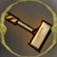 |
Target: Only ground units Strength: 350+-50 Range: 3 Splash-Radius: 2 Splash also damages own units! Type: Magic Attack Speed: 50 Start Time: 0.6 This Attack Skill is used on "Hold Position" |
| Attack Command: Throw |
Target: Only air units Strength: 170+-40 Range: 8 Splash-Radius: 1 Splash also damages own units! Type: Energy Attack Speed: 40 Start Time: 0.02 |
| Level(s): |
Advanced at 10 kills Hitpoints: 2000 -> 3000 Armor Strength: 45 -> 67 Sight: 10 -> 12 |
 | Thor Totem |
| Type: | Building |
| Creation: | Built by Thrall |
| Total Cost: | |
| Production Time: | 20 |
| Maximum Hitpoints: | 3000 |
| Regeneration of Hitpoints: | - |
| Armor-Strength: | 20 |
| Armor-Type: | Wood |
| Sight-Range: | 16 |
| Morph Skill: Build Thor | Morphing to: Thor Refund (Discount): 40 % Morph Speed: 300 |
 | Thrall |
| Type: | Worker Unit |
| Creation: | Produced by Castle |
| Total Cost: | |
| Production Time: | 40 |
| Maximum Hitpoints: | 600 |
| Regeneration of Hitpoints: | 1 |
| Armor-Strength: | - |
| Armor-Type: | Leather |
| Sight-Range: | 9 |
| Thrall is able to Build: | House Mead Bar Bone Tent Blacksmith Farm Valhalla Thor Totem Castle Mistletoe Tree |
| Movement Type: | Ground Unit |
| Move Command: Move | Speed: 190 |
| Repair/Heal Skill: Repair | Repairing: Farm, Bone Tent, Mead Bar, Blacksmith, House, Thor Totem, Castle, Valhalla, Mistletoe Tree Repair/Heal Speed: 40 |
| Harvest/Mine Skill: Mine | Speed: 225 Max Load: 25 Hits per Unit: 1 |
| Harvest/Mine Skill: Harvest Wood | Speed: 150 Max Load: 20 Hits per Unit: 1 |
 | Valhalla |
| Type: | Building |
| Creation: | Built by Thrall |
| Total Cost: | |
| Production Time: | 120 |
| Maximum Hitpoints: | 6000 |
| Regeneration of Hitpoints: | - |
| Armor-Strength: | - |
| Armor-Type: | Wood |
| Sight-Range: | 5 |
| Valhalla is able to Produce: | Flying Valkyrie Valkyrie |
| Valhalla is able to Upgrade: | Holy Valkyrie |
| Needed to build Valhalla: | Blacksmith Mistletoe Tree Mead Bar |
| Valkyrie | |
| Type: | Combat Unit |
| Creation: | Produced by Valhalla |
| Total Cost: | |
| Production Time: | 50 |
| Maximum Hitpoints: | 800 |
| Regeneration of Hitpoints: | 2 |
| Armor-Strength: | 80 |
| Armor-Type: | Leather |
| Sight-Range: | 10 |
| Needed to build Valkyrie: | Blacksmith |
| Movement Type: | Ground Unit |
| Move Command: Move | Speed: 220 |
| Attack Command: Attack |
Target: Only ground units Strength: 300+-100 Range: 1 Type: Sword Attack Speed: 100 Start Time: 0 This Attack Skill is used on "Hold Position" |
| Attack Command: Airattack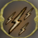 |
Target: Only air units Strength: 170+-50 Range: 7 Splash-Radius: 1 Splash also damages own units! Type: Magic Attack Speed: 110 Start Time: 0.2 |
| Upgrades Available: | Advanced Iron (Attack Strength: +25,
Armor: +5) |
 | Wild Sow |
| Type: | Combat Unit |
| Creation: | Produced by Mistletoe Tree |
| Total Cost: | |
| Production Time: | 30 |
| Maximum Hitpoints: | 700 |
| Regeneration of Hitpoints: | 2 |
| Armor-Strength: | 3 |
| Armor-Type: | Organic |
| Sight-Range: | 12 |
| Movement Type: | Ground Unit |
| Move Command: Move | Speed: 300 |
| Attack Command: Attack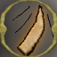 |
Target: Only ground units Strength: 75+-40 Range: 1 Splash-Radius: 0 Splash also damages own units! Type: Magic Attack Speed: 40 Start Time: 0.3 |
This page was generated by: convert_faction_xml2html.pl, version: 0.8.1 beta, using config-file: megapack-temp.ini